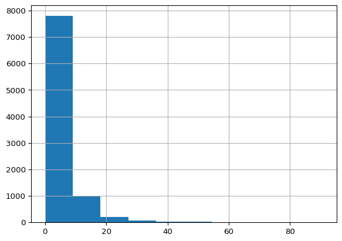

Code
%load_ext jupyter_black
%load_ext autoreload
%autoreload 2IMERG is NASA’s satellite rainfall estimate. This chapter loads daily IMERG rainfall averaged over Cuba and, for each storm, finds the largest two-day rainfall total while it was in the ZMA.
%load_ext jupyter_black
%load_ext autoreload
%autoreload 2import pandas as pd
import ocha_stratus as stratus
from src.datasources import imerg, ibtracs, zma
from src.constants import *pcode = "CU"%%time
# load all IMERG data - bit slow
df_imerg = imerg.load_imerg(pcode)CPU times: user 106 ms, sys: 38.6 ms, total: 145 ms
Wall time: 9.25 sdf_imerg["valid_date"] = pd.to_datetime(df_imerg["valid_date"])df_imerg["mean"].hist()
df_imerg["roll2_mean"] = df_imerg["mean"].rolling(2).sum()The highest two-day total in each year, as a rough sense of scale:
df_imerg.groupby(df_imerg["valid_date"].dt.year)[
"roll2_mean"
].max().reset_index().sort_values("roll2_mean", ascending=False)| valid_date | roll2_mean | |
|---|---|---|
| 10 | 2010 | 125.514080 |
| 1 | 2001 | 120.507424 |
| 8 | 2008 | 114.313233 |
| 20 | 2020 | 112.243160 |
| 2 | 2002 | 111.557137 |
| 18 | 2018 | 108.781929 |
| 23 | 2023 | 99.384370 |
| 5 | 2005 | 97.973385 |
| 11 | 2011 | 97.300541 |
| 7 | 2007 | 95.026070 |
| 14 | 2014 | 91.623430 |
| 22 | 2022 | 85.722103 |
| 6 | 2006 | 83.022918 |
| 17 | 2017 | 82.463090 |
| 12 | 2012 | 80.108310 |
| 16 | 2016 | 77.450830 |
| 21 | 2021 | 75.821024 |
| 24 | 2024 | 66.345132 |
| 0 | 2000 | 63.674508 |
| 9 | 2009 | 62.509863 |
| 19 | 2019 | 61.175295 |
| 3 | 2003 | 60.517828 |
| 15 | 2015 | 51.418671 |
| 13 | 2013 | 48.132240 |
| 4 | 2004 | 44.279298 |
| 25 | 2025 | 19.648167 |
df_imerg| iso3 | pcode | valid_date | adm_level | mean | median | min | max | count | sum | std | roll2_mean | |
|---|---|---|---|---|---|---|---|---|---|---|---|---|
| 0 | CUB | CU | 2000-06-04 | 0 | 6.914716 | 3.870000 | 0.0 | 59.784996 | 3791 | 26213.690 | 7.977752 | NaN |
| 1 | CUB | CU | 2000-06-05 | 0 | 10.971368 | 6.254999 | 0.0 | 95.700000 | 3791 | 41592.453 | 12.472013 | 17.886084 |
| 2 | CUB | CU | 2000-06-06 | 0 | 6.899565 | 4.270000 | 0.0 | 39.845000 | 3791 | 26156.250 | 7.358684 | 17.870933 |
| 3 | CUB | CU | 2000-06-07 | 0 | 2.988547 | 0.915000 | 0.0 | 38.565000 | 3791 | 11329.580 | 4.963941 | 9.888111 |
| 4 | CUB | CU | 2000-06-08 | 0 | 4.753370 | 3.015000 | 0.0 | 34.489998 | 3791 | 18020.025 | 5.450318 | 7.741917 |
| ... | ... | ... | ... | ... | ... | ... | ... | ... | ... | ... | ... | ... |
| 9104 | CUB | CU | 2025-05-04 | 0 | 4.098777 | 0.460000 | 0.0 | 62.214996 | 3791 | 15538.465 | 7.998493 | 6.973996 |
| 9105 | CUB | CU | 2025-05-05 | 0 | 6.518980 | 0.995000 | 0.0 | 79.415000 | 3791 | 24713.455 | 10.494596 | 10.617758 |
| 9106 | CUB | CU | 2025-05-06 | 0 | 3.942065 | 0.605000 | 0.0 | 78.469986 | 3791 | 14944.369 | 8.655358 | 10.461046 |
| 9107 | CUB | CU | 2025-05-11 | 0 | 4.220590 | 0.480000 | 0.0 | 42.555000 | 3791 | 16000.255 | 6.814791 | 8.162655 |
| 9108 | CUB | CU | 2025-05-12 | 0 | 15.427577 | 5.780000 | 0.0 | 100.355000 | 3791 | 58485.945 | 19.509178 | 19.648167 |
9109 rows × 12 columns
gdf_zma = zma.load_zma()df_all = ibtracs.load_ibtracs_in_bounds(*gdf_zma.total_bounds)df_agg = (
df_all.groupby("sid")
.agg(
valid_time_min=("valid_time", "min"),
valid_time_max=("valid_time", "max"),
wind_speed_max=("wind_speed", "max"),
)
.reset_index()
)The method is simple. For each storm, take the days it was in the ZMA plus the following day, and find the largest two-day rolling sum of country-average rainfall in that window. Because each sum covers two days, the day before the storm entered the ZMA also counts. Haiti’s trigger uses the same measure, which made it a reasonable starting point.
def get_storm_rainfall(storm_row):
min_date = storm_row["valid_time_min"].date()
max_date = storm_row["valid_time_max"].date() + pd.DateOffset(days=1)
dff_imerg = df_imerg[
(df_imerg["valid_date"] >= pd.Timestamp(min_date))
& (df_imerg["valid_date"] <= pd.Timestamp(max_date))
]
storm_row["max_roll2_mean"] = dff_imerg["roll2_mean"].max()
return storm_rowdf_agg = df_agg.apply(get_storm_rainfall, axis=1)df_agg| sid | valid_time_min | valid_time_max | wind_speed_max |
|---|
blob_name = f"{PROJECT_PREFIX}/processed/storm_stats/zma_stats.parquet"stratus.upload_parquet_to_blob(df_agg, blob_name)